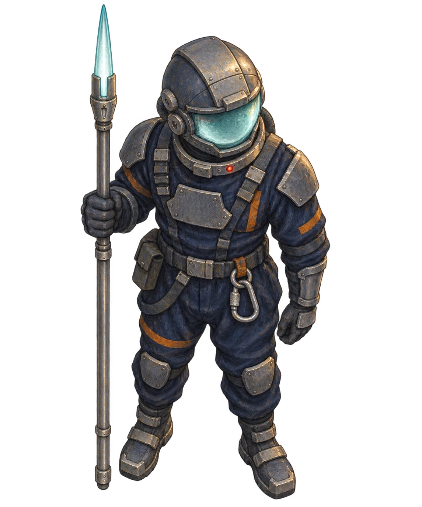

Последняя Орбита
Карты и фигурки ведущего
Игровой комплект
5 игроков · 6 игроков · 7 игроков · 8 игроков
Карта кампании

Поля боя


Герои


Персонажи ведущего


Противники
 Охранник смены Штерн 2Охранник шлюзовой смены 1Охранник смены Штерн 6Охранник шлюзовой смены 3Охранник смены Штерн 3Охранник шлюзовой смены 2Охранник смены Штерн 4Охранник шлюзовой смены 5Охранник смены Штерн 1Охранник шлюзовой смены 4Охранник шлюзовой смены 6Охранник смены Штерн 5
Охранник смены Штерн 2Охранник шлюзовой смены 1Охранник смены Штерн 6Охранник шлюзовой смены 3Охранник смены Штерн 3Охранник шлюзовой смены 2Охранник смены Штерн 4Охранник шлюзовой смены 5Охранник смены Штерн 1Охранник шлюзовой смены 4Охранник шлюзовой смены 6Охранник смены Штерн 5

Конвоир Службы переводов в скафандре 4Конвоир Службы переводов 1Конвоир Службы переводов 4Конвоир Службы переводов 3Конвоир Службы переводов 8Конвоир Службы переводов в скафандре 1Конвоир Службы переводов 9Конвоир Службы переводов 6Конвоир Службы переводов в скафандре 3Конвоир Службы переводов 2Конвоир Службы переводов 7Конвоир Службы переводов в скафандре 2Конвоир Службы переводов 5 Кая Штерн, старшая охраны
Кая Штерн, старшая охраны